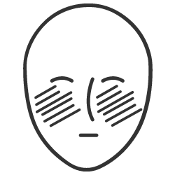

La luz roja y la infraroja pueden mejorar las arrugas periorbitarias hasta en un 75%(Russel et al, 2005)
Es un tratamiento que consiste en la emisión de tres tipos de luz sobre el cuerpo, las que actúan sobre distintas capas de la piel para energizar nuestras células con resultados rejuvenecedores probados. Es una respuesta natural similar a la de la foto-síntesis de plantas a través de un proceso conocido como fotobiomodulación.
Los productos de Dermalux ofrecen un tratamiento no invasivo utilizando estas 3 longitudes de onda en una sóla máquina. Utilizan los beneficios de cada una según la necesidad de cada cliente.
La fotoexcitación estimula la oxidación fotoquímica y destruye las bacterias responsables del acné sin irritación.
La regeneración celular avanzada calma el eritema, acelera la cicatrización y reduce la hiperpigmentación.
Aumenta la energía metabólica y la síntesis de ATP para estimular la renovación celular, la actividad de los fibroblastos y la regeneración del ADN.
La tecnología fototerapia LED ha sido validada por los doctores más prestigiosos en dermatología a nivel mundial.
La luz roja y la infraroja pueden mejorar las arrugas periorbitarias hasta en un 75%(Russel et al, 2005)
La luz roja y la infraroja pueden mejorar la textura y la suavidad de la piel” hasta en un 79%(Neil S Sadick, 2008)
La luz azul y roja puede mejorar las manchas en un 76%(A Chu et al, 2002)

Infórmate sobre los resultados de la fototerapia en el acné
Infórmate sobre los resultados de la fototerapia en la rosacia

Infórmate sobre los resultados de la fototerapia en la hiperpigmentación

Infórmate sobre los resultados de la fototerapia en las arrugas